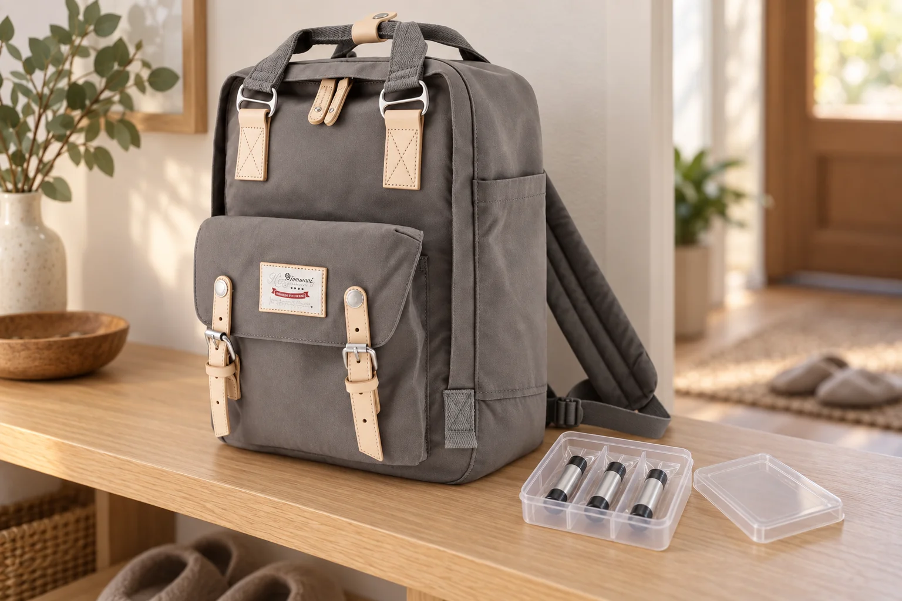

반납할 물건이 있는 날, 일상 백팩에 남기지 않을 묶음

집에서 따로 모아 둔 물건을 반납하러 갈 날에는 평소 백팩에 작은 자리가 하나쯤 있을 듯합니다. 그곳에 넣어 두면 다음 외출 때 잊지 않을 것 같기도 합니다. 그러나 방문 계획이 미뤄지면 임시로 넣은 물건이 일상 짐으로 계속 남을 수 있습니다. 별도 회수 안내를 따라야 하는 폐건전지도 이런 구분이 필요한 예입니다. 반납용 묶음을 가방에 넣을 시점과 다시 꺼낼 시점을 정해두면 일상 소지품과 섞이지 않게 준비할 수 있습니다.
반납 준비가 끝났는지와 가방에 여유가 있는지는 서로 다른 질문입니다. 물건의 종류와 상태에 따른 접수·포장 조건은 실제 회수처에서 확인해야 합니다. 아직 확인하지 못한 물건을 백팩의 작은 포켓에 미리 흩어 넣지 않습니다. 필요한 안내를 알기 전에는 집에서 정해 둔 보관 상태와 장소를 유지하고, 가방은 그 준비가 끝난 뒤 고르는 순서로 둘 수 있습니다.
첫 선택은 일상 백팩을 그대로 쓸 것인가
일상 백팩에는 자주 꺼내는 지갑과 연락 도구, 종이 자료가 있습니다. 반납 물건을 추가할 때에도 이 소지품들이 어디에서 나오는지 유지되어야 합니다. 방문 장소를 찾느라 휴대전화를 꺼내는 동안 반납 묶음까지 움직인다면 두 물건의 경로가 겹친 것입니다. 평소 소지품을 위한 가방과 한 번의 방문을 위한 운반 묶음에 같은 위치를 배정할 필요는 없습니다.
회수처가 안내한 운반 준비를 마친 묶음을 실제 외형으로 봅니다. 그 상태를 바꾸지 않고 백팩에 넣고 꺼낼 수 있는지 확인할 질문이 생깁니다. 공간이 부족하다는 이유로 안내된 포장을 풀어 작은 틈으로 나누어 넣지는 않습니다. 안내된 운반 준비를 마친 묶음의 크기와 놓을 방향으로 백팩의 자리를 비교합니다.
일상 가방을 계속 쓰기로 했다면 반납 묶음을 꺼낼 때 개인 짐을 모두 옮겨야 하는지 살펴봅니다. 접수 장소에서 가방을 어디에 놓을 수 있는지도 현장 안내를 따릅니다. 닫힌 묶음을 통째로 꺼낼 위치가 없다면 같은 가방에 넣는 결정이 맞는지 다시 볼 수 있습니다. 가방을 열 때마다 내용물을 재분류해야 하는 구조는 일상 소지품을 찾는 동작에도 영향을 줍니다.
따로 드는 가방은 역할을 짧게 끝낼 수 있다
필요한 조건에 맞는 별도 운반 가방을 선택할 수도 있습니다. 이 가방에는 해당 방문에서 전달할 묶음만 두고, 지갑이나 열쇠는 평소 가방에 남깁니다. 반납을 마친 뒤 비워지는 가방과 계속 사용할 백팩이 나뉩니다. 별도 가방을 쓴다고 물건의 포장과 접수 조건을 생략할 수 있는 것은 아니므로, 그 안내 안에서 사용할 구성을 고릅니다.
두 가방을 함께 들 때에는 백팩에 임의로 연결해 하나처럼 만들기보다 각 가방이 안내하는 방식으로 운반합니다. 지퍼 장식이나 작은 고리가 다른 짐을 매다는 부위라고 추측하지 않습니다. 대중교통을 이용하거나 출입구를 통과할 때 실제로 관리할 묶음이 하나 늘어난다는 점을 계획에 넣습니다. 접수 장소에 도착하면 어느 물건을 먼저 내려놓을지도 생각할 수 있습니다.
Himawari No.188L은 이날의 개인 소지품을 맡을 백팩으로 살펴볼 수 있습니다. 외부 크기 28 × 39 × 15cm라는 정보는 가방의 바깥 규모를 알려줍니다. 개인 물건은 백팩에 남기고, 별도 운반 조건을 확인한 물건은 그에 맞는 묶음으로 관리하는 선택이 가능합니다.

방문을 미루면 가방의 준비도 끝낸다
반납 장소가 닫혀 있거나 일정이 바뀌면 준비한 묶음을 어디로 돌릴지 정합니다. 일상 백팩 안에 남겨 다음 외출까지 기다리는 방식이 적절한지 확인되지 않았다면, 원래 안내에 맞는 보관 위치로 옮겨야 합니다. 물건을 가져갈 계획과 현재 가방에 들어 있는 사실이 다르면 그 상태를 구별해 둡니다. 출발하지 않은 방문의 짐이 평소 소지품에 합쳐지지 않도록 하는 것입니다.
다른 가족이 백팩을 쓰거나 가방을 바꾸는 경우에도 이 구분이 필요합니다. 오늘 반납할 물건이라는 설명이 전달되지 않으면 개인 파우치와 같은 묶음으로 옮겨질 수 있습니다. 공용 가방에 무엇을 남길지는 사용하는 사람과 함께 정합니다. 반납용 물건을 알아볼 표시가 필요하면 운반 포장 안내를 따르는 범위에서 구별하고, 가방 바깥의 작은 장식만으로 내용물을 추정하지 않습니다.
반납처에 도착해서는 안내된 방식으로 준비한 묶음을 전달합니다. 그 자리에서 물건을 다시 나누거나 포장을 바꾸라는 안내가 있다면 현장 지침을 확인합니다. 가방의 빈 공간을 이용해 스스로 처리 방식을 결정하지 않습니다. 일부를 가져오게 되었다면 남은 물건의 취급·운반 조건을 다시 알아보고 그 상태에 맞춰 귀가 구성을 정합니다.
반납이 끝난 뒤에는 비어진 보조 가방이나 운반 소품의 현재 상태를 확인합니다. 바로 접어 개인 짐 사이에 넣을지 판단할 때도 해당 물건의 관리 안내를 따릅니다. 백팩에 남은 개인 소지품은 원래 위치에서 계속 찾을 수 있어야 합니다. 사용을 마친 임시 가방이 다음 외출에서 어떤 역할을 맡을지는 귀가 뒤 정리할 수 있습니다. 비어 있다는 사실만으로 바로 상시 휴대품이 되는 것은 아닙니다.
집에서는 실제로 전달한 묶음과 아직 남아 있는 묶음을 구별합니다. 백팩의 큰 칸과 작은 포켓에 반납용 물건이 남지 않았는지 실제 물건을 기준으로 봅니다. 다음 방문이 필요하다면 일정과 준비 상태를 따로 남기고, 일상 가방에는 그날 계속 쓸 소지품만 둡니다. 회수 안내를 확인할 일과 가방을 비울 일을 나누면 방문이 바뀌어도 현재 상태를 설명하기 쉽습니다.
임시 운반에 쓸 가방을 고를 때 가장 작은 빈틈을 찾을 필요는 없습니다. 안내받은 상태의 물건을 다룰 수 있는 구성인지, 개인 물건을 찾는 동작과 겹치지 않는지, 방문을 마치거나 미뤘을 때 가방에서 빠져나올 길이 있는지를 봅니다. 반납용 묶음이 일상 백팩에 계속 남는 일이 반복된다면 보관 장소와 출발 시점을 바꾸어볼 수 있습니다. 가방의 역할을 짧고 분명하게 끝내는 선택입니다.